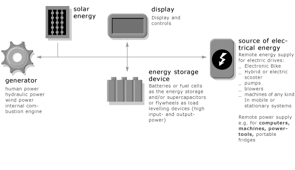
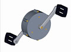
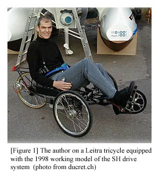
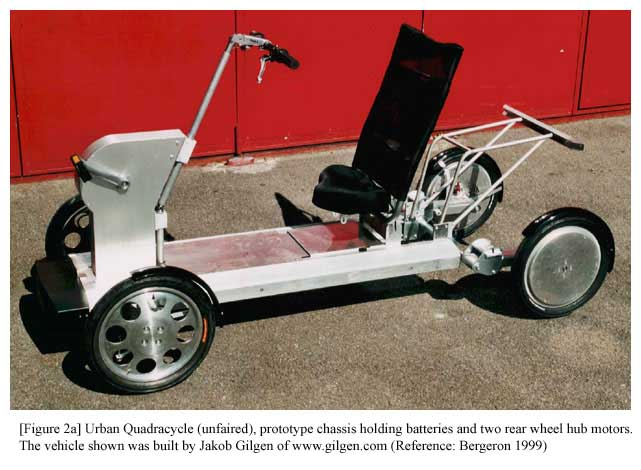
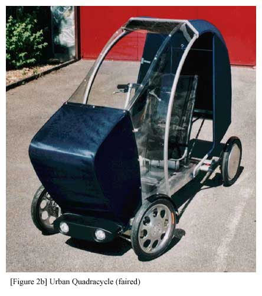
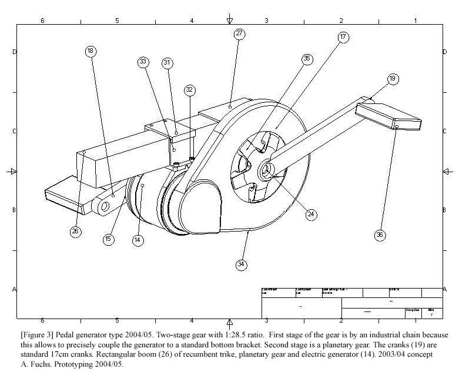

Contents | About | Contact
article 15, issue 05
Series Hybrid Drive-System: Advantages for Velomobiles
Andreas Fuchs
May 21, 2008
Abstract
The basic function of a human powered series hybrid (SH) drive is the same as that of today's electric bicycle drives, which are parallel hybrids (PH). A SH drive is more versatile for the same cost. There are no mechanical transmission elements so that maintenance is simplified. The article covers the history of SH drives up to the year 2005 and includes a comprehensive reference list.
Introduction
In a parallel hybrid (PH) human-electric drive, an electric motor converts electricity to mechanical power and this is added to the mechanical human power by adding the respective torques at a common element, e.g. wheel or chain wheel.
In an electrical series hybrid (SH) human-electric drive, the human power is converted into electricity using a pedaled generator, added electrically to the available stored electricity, and the total converted to mechanical power using an electric motor. The author and his colleagues first used the term “chainless transmission” for vehicles which didn't necessarily require the use of a storage battery. More recently the terms parallel hybrid (PH) and series hybrid (SH) have been used. The figure to the right shows how the SH drive can be expanded to systems with multiple inputs and outputs for any mobile or stationary device.
[Editor's note: In a further type which might be called a mechanical series hybrid drive, the two inputs are combined using differential gears by adding the respective speeds at a common torque. The motor must therefore handle the torque available in the lowest pedal gear. In use this type is more similar to the PH drive and is not the subject if this article. This is an updated, condensed and editted version. The complete text of the article may be downloaded as PDF (600 kB) by clicking here.]
How a Series Hybrid Human Power Drive worksMechanical human power output is converted into electric power by a generator driven by pedals and appropriate gearing. The electrical and hence also mechanical load on the generator is controlled by power electronics which not only optimises the generator's operating point in terms of voltage and current, but also the human's, by providing a good "feel" in terms of resistance (torque) and speed (cadence). The SH drive is a transmission in the sense that the electrical energy from the generator need not be used to charge a battery, but can be fed directly to one or more motors via suitable electronic controllers. If the vehicle needs less power than is being produced by the generator, the energy can be stored in a battery of accumulators or capacitors. These can also be charged by external sources.
Components
[Table 1] Five modules are sufficient to build a SH drive system
Number
Module
Remarks
1
Generator-Module
Replaces the traditional mechanical bicycle drive system
2
Motor-Module, e.g. hub motor
The SH-motor handles the total available power, PH-motors only that from the storage battery.
3
Battery or Capacitor Module
As with a PH-vehicle, but can be smaller.
4
Human-Machine Interface Module
Chooses the type of operation and degree of assistance, also determines the “feel” of the drive.
5
Wire harness
Transmits the power. Easy to accomodate awkward geometries, long distances and many inputs/outputs.
History of the SH Drive System
Early developments with two-wheelers are described at https://sites.google.com/site/serieshybridbikes/.

The first research with velomobiles was conducted at the University of Applied Sciences in Berne during 1994 to 1999. The initial research using mechanical SH drives based on planetary gears was discontinued because they were thought to be too expensive, unreliable and complex to be developed further. The electrical SH drive was conceived in order to radically simplify the drive system. Tests of working models conducted in 1997 and 1998 yielded positive results and in 1999 to 2005 the author attempted a commercial realization of the SH drive system.
At the time, high torque, low speed, brushless electric machines of high efficiency were not available at a reasonable price, so together with M. Lindegger and J. Gilgen custom prototypes were developed. Today this type of electric machine is produced by www.circlemotor.ch.
The first generator prototype ran below 1000 rpm. These machines were too heavy and smaller generators running between 1000 and 2000 rpm were produced.
Between 2000 and 2002, under the name of Autork Ltd., a decentralized SH control system was developed for the “Urban Quadracycle” (early version shown in Fig. 2a and Fig. 2b), using the Circlemotor electric machines. The associated control system used a serial CAN bus to distribute the information signals. Development stopped when a major shareholder of Autork went into bankruptcy.

In 2003 the system was put onto a two-wheeled EZ1 recumbent cycle equipped with electric machines from www.perm-motor.de to test if a SH drive is feasible not only for “Ultralight-Mobiles”, but also for e-bikes.
It was found that the range using a typical e-bike battery was competitive compared to the ranges of commercial parallel hybrid e-bicycles, as tested by ExtraEnergy in 2001 and 2002 (see HPeJ article 9).
During 2004 to 2005 a recumbent tricycle was equipped with a fully encapsulated SH drive. The gear ratio of the pedaled generator was no longer around 1:50 as in the first working models from 1997/98, but 1:30 to 1:20.
Qualities of a SH Drive System
[Table 2] Ergonomics
Type of Drive System
Operational Task for User
Ease of operation
E-Bike, PH
User has to operate two drive systems in parallel.
Dynamic riding requires learning.
Pedelec, PH
User has to operate only the mechanical gears since the electric system is automatically operated.
Learning still required for optimal operation, because the electric and mechanical components behave differently.
mechanical SH (Kutter: Velocity, Dolphin, Swizzbee)
Mechanical gears have to be changed only when the slope changes.
Starting on slopes requires the correct gear, otherwise simple operation.
electronic SH
Components are fully electronically controlled: Any level of automation is easily realized and optimal task allocation to user and to machine is possible, e.g. any degree between full manual control and full automatic control can be realized at nearly no additional “automation cost”.
Easy to operate.
Drive Dynamics
In a SH vehicle, human and machine (electric motor) are only coupled by electrical means. The motor of a SH vehicle needs to provide 100% of the power, that is, the sum of human and electric power. The motor of a SH vehicle is therefore about twice as strong as in an equivalent PH vehicle. Any combination of human and electric power is possible according to the program defined in the controller.
The gear ratio between pedal and wheel of a SH drive is infinity. This particularly suits velomobiles which are slow uphill and fast on the flat. Downhill recuperation is standard and saves brakes while promoting safety.
Efficiency
The SH drive system does not compare with a purely mechanical chain drive e.g. of a racing bike but was not made to replace such drives, but rather to replace mechanically complex hybrid drive systems.
The first working models of the SH drive were equipped with brushed generators with peak efficiencies of between 55 and 70% and with brushed motors with about 80% peak efficiency. However we were astonished that we rode about as long and far as typical PH e-bikes. This was confirmed when Chapelle and collegues measured efficiencies of PH e-bikes of between 55% and 95%. Thus it is possible to build SH vehicles with better efficiencies than the poorer PH bikes.
So far we only discussed “peak” efficiency. If the average efficiency during the whole trip is considered, the efficiency of SHs compared to that of PHs starts to look interesting.
In urban traffic a vehicle is on constant speed only for a minor part of the travel time. Therefore the advantage of high peak efficiency at one operating point of a parallel PH remains advantageous only if the efficiency at other operating points is also good and/or if the gears are used effectively to stay in the optimal region.
People not trained in optimal operation of traditional bicycle gears often pedal off their peak efficiency because humans have a quite narrow peak of high efficiency at some power levels.
A major advantage of the SH is that the system can react more quickly than mechanical gears. The efficiency of the system can be maximized electronically at every moment. The human being can be optimally loaded: the "load-leveling" capability of SH's is very advantageous from a physiological point of view. This was borne out by the author and colleagues and by Daniel Couque (who constantly pedals a generator while manually operating the throttle of the electric motor of his velomobile). The experiences are too few to draw final conclusions yet, but it cannot be easily discounted that the physiological advantages of a SH could over-compensate the disadvantage of peak efficiency of a SH compared to a PH.
Weight
The generator module shown in Figure 3 weighs 4.3 kg including pedals and pedal arms. This is about the same as a chain drive with dérailleur or less than a drive with 3 x 7 gear hub.
Cost
The main difference between a PH drive and a SH drive is the generator. To compare the cost of these drive systems it is sufficient to compare the cost of the generator with the cost of a mechanical bicycle drive system.
A pedaled generator can be made for approximately the cost of a hub wheel motor and motor controller. Compared to continuously variable mechanical or hydraulic transmissions for bicycles (not on the market), there is no cheaper and simpler CVT (continuously variable transmission) than a drive with pedaled generator! A pedaled generator contains about the same sub-modules as modern electric drills available at reasonable prices.
The main initial cost is that of developing the system (software and power electronics) and the components not available on the market. Overall cost reductions are possible by the simplification of the vehicular mechanical design. The channels for chains or intermediate axles can be eliminated completely.
Conclusions
During the last decade's work on preparing the SH drive system for industrialization, the author and colleagues recognized that:
- An SH drive can be operated very dynamically.
- The weight difference between SH and PH drives is small.
- An SH drive does not have to cost more than a PH drive.
- The efficiency of an SH drive is sufficient for practical use and excellent if physiological effects are taken into account.
References
http://www.ebwr.com (Electric Bikes Worldwide Reports)
https://sites.google.com/site/serieshybridbikes/ (Series Hybrid Cycle Site, validated January 2017)
David Gordon Wilson, "Bicycling Science 3". MIT Press 2004. Pages 337 to 340
Jürg Blatter. "Vollelektrischer Hybridantrieb - Und es fährt doch!" Info-Bit (Journal of the Hochschule für Technik und Architektur, Bern) 4/97
Andreas Fuchs and Jürg Blatter. "Chain reaction". Bike Culture 15, Spring 1998
Jürg Blatter und Andreas Fuchs. "Vollelektrischer Muskelkraft-Elektro-Hybridantriebsstrang". Reader of the seminar on 13.3.98 at HTA Bern (called ISBE at this time). Unpublished
Andreas Fuchs. "Neuartige Transmission für wettergeschützte Elektrofahrräder". Info-Bit (Journal of the Hochschule für Technik und Architektur, Bern) 2/98
Andreas Fuchs und Jürg Blatter. "Zweck und Einsatzbereiche von kettenlosen Muskelkraft-Elektro-Hybridantrieben in schnellen Fahrrädern, Velomobilen und Ultraleichtmobilen". Proceedings of the Extra Energy Symposium, IFMA Köln, Sept./Okt. 1998 (german and english)
Jürg Blatter und Andreas Fuchs. "Vollelektrische Muskelkrafttransmission für Ultraleichtmobile". Proceedings of the Extra Energy Symposium, IFMA Köln Sept./Okt. 1998 (german and english)
Andreas Fuchs. "Elektrische Fahrradtransmission an internationaler Fahrradmesse". Info-Bit (Journal of the Hochschule für Technik und Architektur, Bern) 2/99
Fuchs Andreas. "Chainless Electrical Human-Power Transmissions and their likely Applications". Proceedings of the 1999 Velomobile Seminar. Future Bike Switzerland, 1999 (available from http://www.futurebike.ch)
Fuchs Andreas. Vom Ultraleichtmobil zur Elektronischen Fahrrad-Transmission. Summer 2001
Fuchs, Andreas, und Blatter, Jürg. "Steuerung mit CAN-Bus für Hybridfahrzeuge oder Anlagen und Geräte mit dezentralen Steuerungsaufgaben". Automotive Day 2001, ACN-CH, HTA Biel, 14.11.2001
Blatter, Jürg, and Fuchs, Andreas W. "The smallest series-hybrid vehicle in the world is a PowerNet compatible, fully electronical, chainless cycle!" Published in: Graf, Alfons, The New Automotive 42V PowerNet Becomes Reality. Stepping into Mass Production. In coop. w. 24 co-authors, 2003, ISBN 3-8169-2170-1
Blatter Jürg. "Elektronische Transmission - ein technischer Überblick". Infobit (Journal of the Hochschule für Technik und Architektur, Bern) 01/2003
Andreas Fuchs. "Modular Propulsion System for Series Hybrid Electronic Cycles, Series Hybrid Scooters and many other kinds of small Vehicles". Proceedings of EVS 20, Long Beach, 2003
Andreas Fuchs. "E-Management-Integration – Serie Hybrid E-Fahrrad-Antrieb". Final Report, Bundesamt für Energie, 2005
Luc Bergeron, Laurent Clement, Andreas Fuchs. "Urban Quadracycle". Proceedings of the 1999 Velomobile Seminar. Future Bike Switzerland, 1999
J. Capelle, P. Lataire, G. Maggetto, R. Meeusen, F. Kempenaers. "Characterisation of Electric Bicycle Performances". Proceedings of EVS19, 2002
German Eslava. "Experience of Power Assisted Velomobiles Based on the Cab-Bike Usage within Modena European Union Supported Practical Test". Proceedings of the 1999 Velomobile Seminar. Future Bike Switzerland, 1999
Michael Kutter. "VELOCITY - Elektrounterstützung für Velomobile - Mixing of electric and human power at any ratio". Proceedings of the 1993 Velomobile Seminar. Carl Georg Rasmussen, Denmark, 1993
Carl Georg Rasmussen. "Who needs power assist?". Proceedings of the 1999 Velomobile Seminar. Future Bike Switzerland, 1999
Rohloff GmbH. "Wirkungsgradmessungen von Fahrradantrieben – eine unendliche Geschichte?!"
About the Author
Dr. Andreas Fuchs (1963) worked as a researcher and lecturer at the the Berne University of Applied Sciences, School of Engineering and Information Technology in Biel, Switzerland, and led projects on human electric hybrid vehicles. From 1996 to 1998 and 2000 to 2002, he worked with Juerg Blatter to develop the chainless transmission for pedal powered machines.
Andreas may be contacted at:
Gutenbergstrasse 24, CH-3011 Bern, Switzerland, +41 79 294 06 93,
andreas.fuchs AT bluewin DOT ch